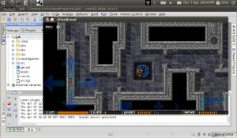

In a previous post I showed how I translated the Python source to Java. Translating the source for my game logic to Java is only part of the problem. The Java still requires a functioning game library for the target platform, in my source translation this was just stubbed.
The Python version uses the excellent SDL library as it works on just about everything. Everything except Android. What I needed was a similar library which I could drop into my game with minimal impact. I found that in Slick-AE.
Slick is an opensource 2D Java game library for the desktop with a very simple API. The author, Kevin Glass, has recently started patching the Slick library to run on Android using the libGDX. This promises a simple API which can run equally well on the Desktop or phone. Conveniently Slick's API is very similar to the MyGame library in the Python game.
Implementing the MyGame stubs, stripping out SDL concepts and replacing with Slick equivalents took a couple of days. I am very impressed with the simplicity of the Slick library, things just worked first time. Much easier than the original SDL/Python/Pyrex attempts!

With the game running in Java on the Desktop I could start looking at an Android port.
My IDE, IntelliJ, includes good tool support for targeting Android. Getting a basic game running was a fairly straightforward process of:
With only a couple of weeks work I now have a fully playable port of the game on Android. The entire process was pretty straightforward. The tooling, with the exception of the Android emulator, is a pleasure to work with.
Unfortunately I can't release a playable version of the Android app due to the copyrighted media. As there have been instances of unscrupulous developers taking open source games and releasing into App stores
for personal profit I'm reluctant to release the source code either. However, if you are a serious developer
looking for help you can contact me.
You can see a video of the game running on the phone is here.